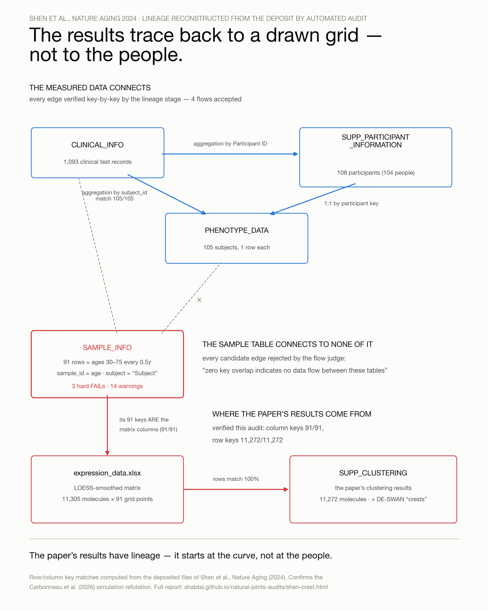

Three phases, run in order, followed by two adversarial passes. The two audits in Phase 2 were mutually independent: each worked from its own reference frame with no access to the other’s output. All phases were executed by Claude Fable 5.
Input: the nine deposited tables. No analysis code, no paper text. Each table is characterized from its contents alone: its grain (what a single row represents), which columns function as identifiers rather than measurements or classifiers, and whether tables sharing a key agree on the columns they have in common. A table whose contents are impossible for the entity its name claims is flagged. The output is a persistent semantic layer written alongside the tables — per-table grain, column roles, vocabularies, and cross-table key relationships — with the defect reports sitting on top of it: 225 across the nine tables, 223 column-level warnings and 8 table-level failures. The layer, not just the flags, is what the next phases consume.
Claims vs. code holds the published text against the deposited scripts: does the program do what the paper says it does? Code vs. data holds the scripts’ assumptions against the files they read: do the program’s preconditions hold on the actual data? Both ran with the full Phase-1 layer loaded — the grain and column-role descriptions as well as the flags — so when a script indexes a column or joins two tables, the auditor holds the semantic description of what those objects are; neither was restricted to the layer.
Every claim was re-checked by recomputation against the raw CSVs with an independent toolchain; the deposited R scripts were analyzed but not executed. Two adversarial passes then attempted to refute every finding — one against the primary artifacts, one against the paper’s full text on argument logic; refuted sub-claims were removed, and the corrections are recorded in the full report.
First, what “the data” is. A deposited package is not a study’s raw input; it is whatever the analysis workflow exported at the end — measurement tables, annotation tables, and, unmarked among them, the workflow’s own intermediate products. Phase 1 does not assume this decomposition; it recovers it, by asking of each table whether its contents are possible for the entity its name claims.
On one table the answer was no. Three failures, raised with no access to any code or method description:
| Failure | Reported, verbatim |
|---|---|
| Ambiguous grain | “The table claims a grain of ‘one row per sample_id’, but the sample_id column contains age points, not unique identifiers.” |
| Domain coherence | “subject_id is resolved as a classifier but holds the constant string 'Subject', meaning it does not contain a subject identifier.” |
| Role coherence | “PK 'sample_id' votes 'sample', but 1 body column(s) unanimously imply 'subject' (age→subject).” |
One term needs precision: a table does not literally “claim” a grain. The declared grain is read off the artifact’s own self-description — a table named sample_info whose unique key column is named sample_id declares, by the ordinary semantics of those labels, one row per sample. That is the reading every consumer applies, and it is the reading the deposited tests enact when they treat each row as an independent sample. The flag therefore reports a contradiction internal to the deposit — between the table’s labels and its values — not a mismatch between an auditor’s assumption and the data.
This shape is not consistent with a conventional participant-level sample table — ages appear on a perfectly regular grid, identifiers are non-unique, and the subject field is constant — and it is exactly what one expects of a prediction grid: characteristic of the output of a smoother evaluated at regular points. What the data-only pass detected was therefore not dirty data: it was the pipeline itself, materialized in the data layer — the method’s intermediate, exported into the deposit under the name of a sample table. Reading this table is reading the method.
The object itself, against a genuine sample table. The deposit contains both kinds, and the contrast is the finding in miniature. Real collection events in this study look like the left column; sample_info.csv is the right:
clinical_info.csv (measurement layer) sample_info.csv (the flagged table)
subject_id sample_id collection_date sample_id class subject_id age
"69-001" "69-001-01" 2010-03-29 30.0 Subject Subject 30.0
"69-001" "69-001-02" 2010-04-02 30.5 Subject Subject 30.5
... (1,093 events, 104 people, 31.0 Subject Subject 31.0
ages 25.9–75.2, irregular) ... (91 rows, one "subject",
ages 30.0–75.0 in exact 0.5 steps)
Where the table sits in the paper’s own flow. It is not a corrupted input; it is a healthy intermediate — the output of the smoothing stage and the input of the testing stage:
participants (104 people, ragged ages 25.9–75.2) → per-subject aggregation (one age per person) → LOESS fit per molecule (11,305 curves over ≤104 subject-level points) → curves evaluated at seq(30.0, 75.0, by 0.5) ← sample_info.csv is this stage's output → significance tests (sliding Wilcoxon, DEG, Spearman) ← and this stage's input → crest figures
The generation site is visible in the deposited code: the LOESS-fit script constructs a fresh metadata frame with subject_id = "Subject" over the grid ages and attaches it to the smoothed expression matrix. Critically, that object is packaged in the same three-file convention — expression matrix, sample_info, variable_info — used for the genuine per-omics sample tables upstream. Downstream code addresses any such object identically, which is why the substitution of curve points for people happened silently: after the smoothing stage, nothing in the format, the naming, or the code distinguishes a table of grid coordinates from a table of human samples. The tests consumed the one exactly as they would have consumed the other.
How each wrong column property maps to a wrong test assumption. The connection is not loose: every impossible property the flags describe is a specific inferential assumption, violated and made visible as data:
| Property of the table | Assumption it breaks | Statistical consequence |
|---|---|---|
sample_id equals age — the key is a measurement | Unit of analysis: rows are sampled entities | Rows are curve coordinates; the n the tests count is grid resolution, not sample size — 20 points per arm against 6–9 contributing participants |
subject_id is the constant "Subject" | Independence of observations | Every row derives from the same fit over the same people; the window arms contain zero independent replicates, violating the Wilcoxon and ANOVA assumptions by construction |
| Ages in exact 0.5-year steps | Sample size is collected, not chosen | The number of “observations” per window is a parameter of the smoother; the attainable p becomes 2/C(2k,k), set by grid density |
| Values lie on one smooth curve | Rank structure reflects noise in the data | Within-window ranks are near-deterministic; any separating drift reaches the floor p regardless of effect magnitude, so linear and non-linear change are indistinguishable |
This is why the finding is one defect seen from two sides rather than two defects: the impossible table and the invalid inference are the same object. The flags read the violated assumptions off the columns; the tests enact them.
Is the defective code the creator of this table, or its consumer? Neither alone. The creator is computationally sound — evaluating a smoother on a grid is legitimate — but type-dishonest: it stamps curve coordinates into the schema of a sample table. The consumer commits the actual statistical error — treating those rows as independent observations — but is conditionally correct: given the input type its labels promise, it is a defensible implementation of the published method, and run on genuine samples it behaves validly (as Carbonneau et al. showed by doing exactly that). The defect lives at the handoff: the creator changed the meaning of “row” from person-sample to curve-coordinate, the packaging convention carries no type information that could express the change, and nothing downstream checks. Each stage is locally plausible; the composition is invalid — which is why no stage’s author saw it, and why a pass that types tables by their contents did.
How a defect that is in neither stage’s code was caught at all: the handoff was persisted. The creator wrote its output to disk and the deposit published it, so a composition error that exists only between two scripts became a property of an object — a table whose labels say samples and whose values say grid — and objects, unlike compositions, can be read without any code. The consumption end left residue too: the cached test output carries the combinatorial fingerprint of grid input. Inter-stage errors are invisible in stages and visible in artifacts; a pipeline that persists its intermediates deposits a record of its own execution, and every mislabeled handoff in that record is an impossible object waiting to be typed.
None of the three flags names LOESS — the pass has no access to the method, so it can report the impossibility but not its cause. Two calibration facts constrain the claim. First, each individual note was issued as an ordinary warning — hygiene advice of the kind a reader skims past; the FAIL verdicts came from a composition step that read the notes together: a key that is a measurement, a subject column containing one subject, and a body column implying a different entity than the key. No single flag was decisive. Second, what the flags establish is a necessary condition — a signature consistent with a generated grid — not yet the identification of which procedure generated it or which tests consumed it. The remaining steps close that gap.
The flagged table is sample_info.csv: 91 rows spanning ages 30.0 to 75.0 in exact 0.5-year steps, sample_id equal to age on every row, subject_id the constant "Subject" — a LOESS prediction grid, generated at 2_loess_fit_cross_section.R and exported into the deposit under the name of a sample table. Both code audits traced its consumption: do_se_swan (100-tools.R:634) pulls its test variable from this object’s sample_info; the call site (cross_sectional_loess/DE-SWAN2.R:33–44) runs window centres 40–65 with 20-year windows over it; the DEG tests (5_clinical_test/3_DEG.R) and the age correlations (5_correlation_with_age.R:60–83, Spearman on as.numeric(sample_id)) load the same grid objects. Three test families, one interpolated input.
Interpolation is not itself the defect. A smooth curve may be entirely appropriate for visualization or estimation. The defect arises when interpolated values are subsequently treated as independent biological observations in hypothesis tests — which is what the traced call sites do.
What the deposited record shows:
DE-SWAN2.R:416–477) — and shuffles ages after the LOESS step, an invalid null, since points on a fitted curve are not exchangeable with respect to age.What happens under a null:
Together, these establish both mechanism and consequence: the test configuration can manufacture the reported pattern without an age-dependent molecular signal.
Fact. The object the significance tests consume is not a sample table but a LOESS prediction grid published under the name of one. The Wilcoxon sliding-window tests, the DEG ANOVA/t-tests, and the grid Spearman correlations all treat its 91 interpolated points as independent samples.
Consequence. The effective sample size of any window is the number of participants contributing data to it — 6 to 9 where the crests live — not the number of interpolated points it contains.
Blindness to the claimed contrast. The smoothed curve makes within-window rank ordering nearly deterministic: once the two arms are completely rank-separated, the exact Wilcoxon statistic reaches its maximum regardless of the magnitude of the underlying effect, so a purely linear age effect produces the floor as readily as a sharp non-linear one. The statistic used to establish non-linearity does not distinguish non-linear change from linear change. Saturation alone does not localize crests — the crest is a property of the significant-count curve across centres — which is why the decisive demonstration is the null simulation, not the floor.
Dependence on interpolation density. The attainable significance is 2/C(2k,k) in the grid step; the deposited cache’s minimum p matches the published step’s value to nine digits, with 17.9% of all 293,930 tests exactly at it. The attainable significance depends on interpolation density — a numerical parameter that adds no independent biological observations.
Null validation. Pure noise passed through the same inferential pipeline yields 59–88% significance and crests of its own.
Effect on paper claims. This is the inference layer beneath the paper’s central result. The claim at risk is not that the molecules were measured incorrectly, but that the reported crests represent a detected biological signal: on the deposited pipeline, a dataset with no age signal yields comparable significance counts and comparable crests. Downstream, the crest molecule sets feed the pathway enrichment and correlation-network analyses, which inherit the q-values.
What it does establish: the reported participant-level significance cannot be obtained from the interpolated grid using independent-sample inference as implemented — and the same configuration produces crest-like significance under a pure-noise null.
Several independent observations made from the deposited files converge with the mechanism demonstrated by Carbonneau et al.; others are forensic observations about the deposited implementation with no simulation counterpart:
| Reported here, from the file alone | Corresponding observation in Carbonneau et al. |
|---|---|
Ambiguous grain. The sample_id column contains “age points, not unique identifiers.” |
“LOESS-interpolated values are derived estimates, not independent observations, and should not be analyzed as though they were measured data.” |
Domain coherence. subject_id “contains exactly one distinct value 'Subject' across 91 rows.” |
“Each point along the curve is estimated relative to the same dataset and constrained to follow a smooth trajectory.” — there is no distinct person behind any row, and the file states it literally. |
Exact duplicate columns. “Columns [sample_id, age] are exact duplicates”; downstream code “treats the duplicate as an independent feature.” |
“A statistical test assuming independent data points is instead being used on highly correlated data.” |
| Redundant data columns. The two columns are “perfectly correlated with a constant ratio” — 30.0 to 75.0 in fixed steps. | “This artifactual trend is amplified when LOESS is used to interpolate data points across a uniform grid of points positioned every 0.5 years.” — the preprint describes the grid as a procedure it simulated; the same grid is materialized in the deposited file. |
| Granularity misinterpretation. “Analysts counting rows may overstate population size.” | The effective sample size in a window is the number of contributing subjects, not the number of grid points; counting grid points yields hundreds of false discoveries per window centre. |
Role coherence and name collision (subject_id denotes different entities in CLINICAL_INFO and SAMPLE_INFO). |
No counterpart. These locate the seam — the point in the pipeline where people become curve coordinates. The preprint treats the grid as self-evidently a grid, since it reasons about a procedure rather than a received file. |
Added after the original report. The enrichment pipeline gained a table-to-table lineage stage; the deposit was re-enriched with it, and the manual matrix checks below were run against the deposited files.
The lineage stage proposes candidate data flows between tables (aggregations, keyed copies, derived extracts), then verifies each candidate key-by-key against the actual values before accepting it. On this deposit it split the tables into two components:
The measured data connects. Four flows were accepted, each with per-key match rates verified: the clinical records table aggregates into the phenotype table (105/105 subject keys matched) and into the participant table, and the participant and phenotype tables align one-to-one on the participant key.
The sample table connects to none of it. Every candidate edge linking SAMPLE_INFO to the rest of the deposit was rejected by the flow judge, e.g.: “zero key overlap indicates no data flow between these tables.” The table that the significance tests consume shares no keys and no values with any measured table in the deposit.
The results, however, do have lineage — and it starts at the grid. Two key-level checks complete the chain. The deposited LOESS matrix (3-data_analysis/combined_omics/data_preparation/cross_section_loess/expression_data.xlsx, 11,305 molecules × 91 columns) has as its column headers exactly the 91 sample_id values of SAMPLE_INFO — 91/91. And the matrix’s row identity (the adjacent variable_info.xlsx) contains all 11,272 variable_id rows of the published clustering-results table (SUPP_CLUSTERING_OF_ALL_MOLECULES) — 11,272/11,272. The DE-SWAN result files sit on the same branch of the deposit.

This report treats one finding. The complete audit of the same deposit — six further findings covering the cohort table, the published clusterings, identifier integrity, and the supporting analyses, with an evidence ledger and novelty status for each — is at iPOP Aging — Audit Report.
Nothing here claims the underlying measurements are wrong, and nothing rules out non-linear molecular aging as a phenomenon — Carbonneau et al. are explicit on that point as well. What is established is narrower and sharper: the reported significance cannot be interpreted as independent-sample evidence for aging crests, because the inferential sample consists of LOESS-derived values rather than independent participants — and the same configuration produces crest-like significance under a pure-noise null. Both facts are provable from the deposited record, by anyone.